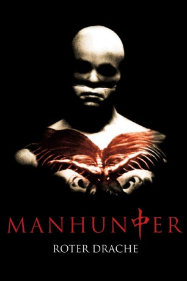
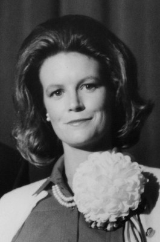

#7647 Manhunter - Roter Drache
Alternativ: Blutmond (Originaltitel)
 
 IMDB-Wertung: 7.2 / 10
IMDB-Wertung: 7.2 / 10  Metascore: 0
Metascore: 0 
Zwei Familien werden bei Vollmond auf grässliche Weise ermordet. Das FBI zieht den demissionierten Profiler Graham hinzu, der fast selbst den Verstand verlor, als er Serienmörder Dr. Hannibal Lecter zur Strecke brachte. Graham nimmt mit Lecter Kontakt auf, der ihn hintergeht und seine Adresse an den Mörder weiter gibt. Graham rückt dem Killer näher, der den Journalisten Lounds entführt und tötet und mit seiner blinden Kollegin Reba schläft. Er bringt Reba aus Eifersucht in seine Gewalt. Im Wettlauf mit der Zeit kann Graham sie retten.
Jahr: 1986
Dauer: 120 Minuten
FSK: 16
Land: USA Studio: DEGTonspuren:
Untertitel: Deutsch, Englisch,
Auflösung: 1080p (1920x816) Größe: 5857 MB
Genre: Thriller, Horror, Krimi, Mystery
Regisseur:  Michael Mann
Michael Mann
Drehbuch: Thomas Harris
Soundtrack: Klaus Schulze
Darsteller:
 William Petersen als Will Graham
William Petersen als Will Graham- Kim Greist als Molly Graham
 Joan Allen als Reba McClane
Joan Allen als Reba McClane Brian Cox als Dr. Hannibal Lecktor
Brian Cox als Dr. Hannibal Lecktor Dennis Farina als Jack Crawford
Dennis Farina als Jack Crawford Tom Noonan als Francis Dollarhyde
Tom Noonan als Francis Dollarhyde Stephen Lang als Freddy Lounds
Stephen Lang als Freddy Lounds- Benjamin Hendrickson als Dr. Frederick Chilton
 Michael Talbott als Geehan
Michael Talbott als Geehan Dan Butler als Jimmy Price
Dan Butler als Jimmy Price Paul Perri als Dr. Sidney Bloom
Paul Perri als Dr. Sidney Bloom Patricia Charbonneau als Mrs. Sherman
Patricia Charbonneau als Mrs. Sherman- Alexandra Neil als Eileen
 Frankie Faison als Lt. Fisk
Frankie Faison als Lt. Fisk Garcelle Beauvais als Young Woman Housebuyer
Garcelle Beauvais als Young Woman Housebuyer- Joanne Camp als Mother on Plane
- David Allen Brooks als Mr. Leeds
 Chris Elliott als Zeller
Chris Elliott als Zeller- Ken Colquitt als Husband Housebuyer
- L.A. Winters als Secretary #2
- Kin Shriner als Mr. Sherman
 John Posey als Mr. Jacobi
John Posey als Mr. Jacobi Bill Smitrovich als Lloyd Bowman
Bill Smitrovich als Lloyd Bowman Peter Maloney als Dr. Dominick Princi
Peter Maloney als Dr. Dominick Princi Michael D. Roberts als The Runner
Michael D. Roberts als The Runner-  Annie McEnroe als Stewardess , uncredited
- David Seaman als Kevin Graham
- Michele Shay als Beverly Katz
- Robin Moseley als Sarah
- Bill Cwikowski als Ralph Dandridge
- Norman Snow als Springfield
- Jim Zubiena als Spurgen
- Elisabeth Ryall als Mrs. Leeds
- Gary Chavaras als Guard
- Chris Cianciolo als Attendant
- Ron Fitzgerald als Storage Guard #1
- Dennis Quick als Storage Guard #2
- David Meeks als Dr. Warfield
- Sherman Michaels als Technician
- Robin Trapp als Secretary #1
- Daniel T. Snow als State Trooper
- Cynthia Chvatal als Airport Waitress
- King White als Swat Man
- Mickey Lloyd als Atlanta Detective
- Dawn Carmen als Child on Plane
- David Fitzsimmons als Bill
- Robert A. Burton als Doctor
- Steve Hogan als Helicopter Pilot
- Mickey Pugh als Lear Jet Technician
- Kristin Holby als Mrs. Jacobi
Datei: X:\5-Pentalogie(A-Z)\Hannibal Lecter\Manhunter - Roter Drache (1986, FSK16, 1920x816).mkv seit 29.11.2017
Festplatte: HD Collection-3(N-Z)-6(A-Z)
 Es gibt insgesamt 8 Filme in der Gruppe '5-Pentalogie(A-Z)\Hannibal Lecter'
Es gibt insgesamt 8 Filme in der Gruppe '5-Pentalogie(A-Z)\Hannibal Lecter'